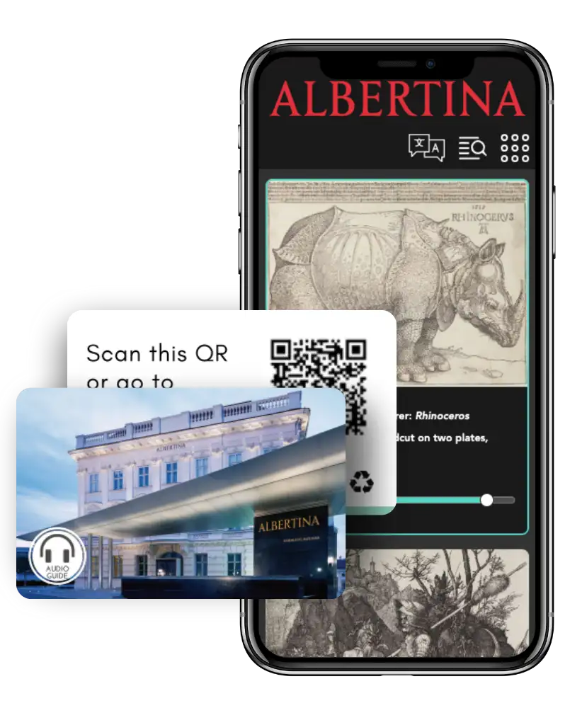

Hebt u inhoudproductie nodig voor uw audiogids?
Was u eigenlijk op zoek naar een gidsensysteem?
Ontdek hier Nubart LIVE, het digitale systeem voor rondleidingen van Nubart.
Waarom Nubart?
Omdat conventionele audiogidssystemen een complexe logistiek vereisen en elektronisch afval genereren.
Omdat een audiogids-app duur is en niet te gelde kan worden gemaakt en slechts ongeveer 2% van de bezoekers hem downloadt.
Eenvoudiger kan het niet
Waarom een audiogids als iedereen een smartphone heeft?
Gemakkelijk te bedienen
Bezoekers hoeven alleen maar de QR-code te scannen om toegang te krijgen tot de inhoud. Dankzij onze innovatieve scrollende interface is het vinden van stations eenvoudig en intuïtief, zelfs voor digitaal onervaren gebruikers.
Te verzilveren
In tegenstelling tot apps kan een Nubart-kaart verkocht worden , omdat deze niet overdraagbaar is. Nubart kan een bron van inkomsten zijn voor uw museum!
Geschikt voor sponsoring
In tegenstelling tot apparaten of apps kunnen bij Nubart sponsorlogo's op de audiogidskaart worden afgedrukt.

Digitaal hulpmiddel voor rondleidingen
Optioneel kunt u een module integreren met een digitaal groepsbegeleidingssysteem. Zo hoeft u geen dure geleidingssystemen aan te schaffen.
Zeer hoog opnamepercentage
Onze tickets behalen een TUR van 10-20% wanneer ze afzonderlijk worden verkocht en 45-85% wanneer ze in de toegangsprijs zijn inbegrepen.
Offline modus
Bevindt uw museum zich in een zogenaamde dode zone? De audiogidsen van Nubart bieden een innovatieve offline modus. Na het scannen van de QR-code hebben bezoekers op elk moment toegang tot de volledige audiogids, zelfs in gebieden zonder internetverbinding.
Milieuvriendelijk
Elektronische apparaten veroorzaken elektronisch afval. De audiokaarten van Nubart worden gedrukt op FSC-gecertificeerd karton en zijn 100% CO2-gecompenseerd.
Alleen audio? Of een complete multimediagids?
Video's, schuifbalken, modulaire structuur, offline modus, downloadbare bestanden, afstandsbediening van de audiogids, mogelijkheid om bestanden te uploaden of spraakberichten achter te laten...
Dit en nog veel meer kan worden geïntegreerd in een Nubart audiogids.
Uw audiogidskaarten te gelde maken
Hoe maken we onze audiogids-kaarten niet-overdraagbaar?
Een audiogids is een belangrijke extra service voor uw museum. De ervaring leert echter dat slechts 15-30% van uw bezoekers van deze dienst gebruik wil maken. Het produceren van een audiogids is duur en u wilt misschien een deel van de kosten terugverdienen. Misschien ziet u uw audiogidsen ook als een bron van inkomsten voor nieuwe projecten.
Als u dezelfde QR-code aan alle bezoekers geeft, is het niet mogelijk om geld te verdienen met de audiogids, omdat deze links openbaar zijn en gedeeld kunnen worden.
Bij Nubart hebben we een systeem gepatenteerd dat Lightweight Web Access Control heet. Hiermee kunnen we het apparaat van de gebruiker anoniem identificeren. De rechtmatige eigenaar van de audiogids-kaart kan op elk moment weer toegang krijgen tot de inhoud, maar deze kan niet doorgegeven worden aan anderen. Dit maakt uw inhoud waardevoller, ongeacht of u de kaarten apart wilt verkopen of ze in de toegangsprijs wilt opnemen.
Hoewel de QR-codes op de Nubart-kaarten niet overdraagbaar zijn, kunnen ze op elk moment opnieuw gebruikt worden door de rechtmatige eigenaars. Dit is belangrijk, want de mogelijkheid om de kaart te houden en de audiogids opnieuw te gebruiken is een belangrijk verkoopargument voor bezoekers en verhoogt het gebruikspercentage.
Als u de tickets liever niet gebruikt, kunnen wij u de links of QR-codes online leveren via onze API. Zo kunt u ze in uw ticketsysteem integreren.
Hoe werkt het?
Onze QR-codes zijn niet overdraagbaar...

-
Niet overdraagbaar: Het apparaat heeft direct toegang tot de audiogids bij het scannen van de QR-code.
De QR-code is uniek en kan niet openbaar gedeeld worden.
De meeste bezoekers gaan niet verder.
...maar herbruikbaar

- Herbruikbaar: De inhoud is opnieuw toegankelijk vanaf een tweede apparaat. Hiervoor moet een toegangslink per e-mail worden verzonden. Zodra op de link wordt geklikt, worden de toegangsrechten overgedragen naar het tweede apparaat. De link kan niet worden doorgegeven.
- Bezoekers die in het bezit zijn van de kaart, kunnen de inhoud zo vaak als ze willen blijven bekijken vanaf elk ander apparaat. De toegangslink wordt altijd naar het eerder opgegeven e-mailadres gestuurd. Dit e-mailadres kan niet worden gewijzigd.
Wat museumbezoekers zeggen over de audiogidsen van Nubart
Beoordelingen van gebruikers
Vraag een folder aan met voorbeelden van Nubart audiogids-kaarten
Wilt u onze kaarten gratis testen?

Vul dit formulier in en wij sturen het u per post toe:
Geolokalisatiefuncties in de audiogidsen van Nubart
Wilt u uw bezoekers de weg wijzen?
Geo-scrollen, interactieve kaarten met locatieweergave, overlay met plattegrond voor binnenruimten...
Ons pakket voor geolokalisatie dekt vrijwel alle navigatiebehoeften van uw bezoekers.
Bezoekers kunnen een interactieve kaart openen met alle stations in de audiogids. Uw locatie wordt weergegeven.
Elk geolokaliseerd station van de audiogids heeft zijn eigen knop om de locatie van het station op de kaart weer te geven.
Buiten kunnen onze locatie-gebaseerde audiosporen automatisch omhoog scrollen wanneer bezoekers een bepaald station naderen. In Android wordt dit proces ondersteund door een lichte trilling van de mobiele telefoon.
We kunnen een overlay invoegen met de plattegrond van binnenruimte om navigatie te ondersteunen.
Bekijk de interactieve kaarten van Nubart in actie

Eenvoudig publieksonderzoek met de audiogidskaarten van Nubart
Wilt u uw bezoekers beter leren kennen?

Bezoekersonderzoek in het museum zonder opdringerig te zijn
De kaarten van Nubart zijn niet alleen een innovatieve audiogids die uw publiek een meertalige service biedt, maar ook een onopvallend hulpmiddel voor het verzamelen van gegevens. U kunt veel te weten komen over uw publiek via de smartphone browsers, maar altijd anoniem en GDPR-compliant.
Als klant van Nubart krijgt u toegang tot uw eigen met een wachtwoord beveiligde klantenruimte. Daar ontvangt u een statistisch overzicht met gegevens over het gebruik van de audiogids. Onze gratis rapporten bevatten onder andere
- Land van herkomst van bezoekers
- Moedertaal van de bezoekers
- Bezoekers per dag en tijdstip
- Hoe lang blijven uw bezoekers
- Aanduiding van de meest beluisterde tracks als percentage
Geïntegreerd feedbackformulier voor bezoekersonderzoek
Laat uw bezoekers aan het woord
Opiniepeiling direct in de audiogids
Onze gegevensrapporten bevatten waardevolle, anonieme informatie over uw bezoekers en hun gedrag. Maar bepaalde informatie kan niet automatisch worden verkregen: bezoekers moeten er rechtstreeks naar worden gevraagd.
Daarom vinden bezoekers aan het einde van de audiogids een korte vragenlijst met vijf vragen. Twee daarvan staan vast:
- Beoordeling van de tentoonstelling van 1 tot 5.
- Commentaarveld voor opmerkingen over de tentoonstelling, de collectie of de audiogids.
Bezoekers die een goede beoordeling van 4 of 5 in de gids geven, kunnen ook gevraagd worden om een beoordeling in Google achter te laten.
U of uw werknemers kunnen de opmerkingen van bezoekers in realtime per e-mail ontvangen.
Het museum is vrij om de andere drie vragen uit een lange lijst te kiezen. Om de kwaliteit van onze gegevens te waarborgen, kan de bezoeker slechts één keer antwoorden, wat wordt gegarandeerd door onze individuele codes per kaart. Onvolledige antwoorden worden ook door ons geregistreerd.

Geen probleem! Wij organiseren alles voor u. Wij hebben een groot netwerk aan professionals die scripts, vertalingen of geluidsopnamen voor u kunnen maken.
Bezorgd over de kosten? Niet nodig!
Nubart houdt het praktisch voor u
Nubart als product
U bestelt gewoon een bepaald aantal gepersonaliseerde kaarten. U kunt Nubart ook opdracht geven om de inhoud te produceren. Onze kaarten zijn onbeperkt geldig en u kunt ze verspreiden (gratis als onderdeel van de entree of voor de verkoop) tot ze op zijn. Ideaal voor kleine musea of projecten
Audiogids - zonder maandelijkse kosten!
Inkomsten delen
Omdat we de unieke code op de kaarten anoniem kunnen traceren, weten beide partijen precies hoeveel kaarten er gebruikt zijn en kunnen we maandelijks factureren. Wij voorzien u van een continue aanvoer van kaarten en kunnen de productie van inhoud in de kaartprijs opnemen.
Inkomsten zonder kosten vooraf!
Abonnement
Wilt u de tickets in de toegangsprijs opnemen? Wij leveren de tickets vooraf gratis aan u en brengen alleen maandelijks kosten in rekening voor de tickets die u uitgeeft. We kunnen de productiekosten van de inhoud in de toegangsprijs opnemen. Ons gebruikspercentage is hoog (45-85%).
Service zonder kosten vooraf!
Klanten die de audiogidsen van Nubart gebruiken
Een selectie van de audiogidsklanten van Nubart